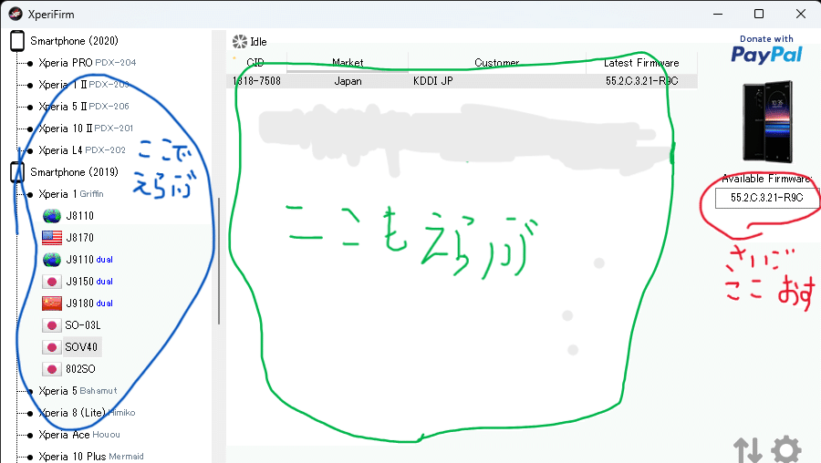
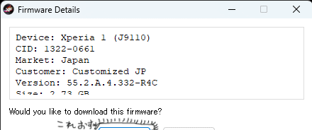
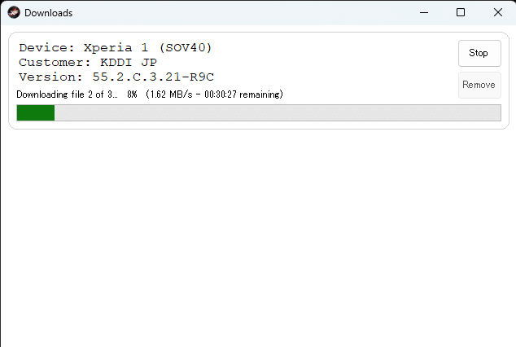
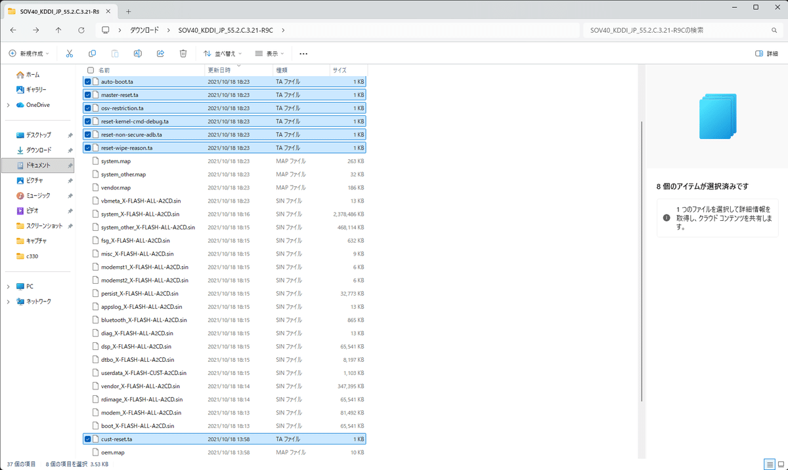
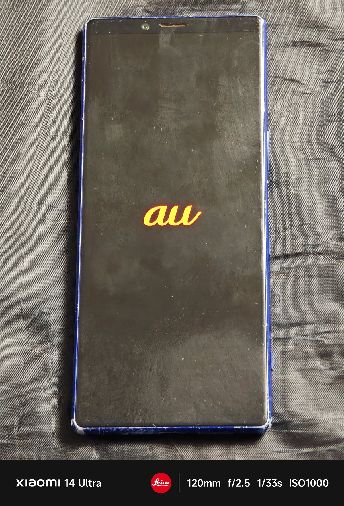

android11にしたい！！
いや、やっぱね、ほかのモデルよりバージョン低いのは、なんかもやもやじゃん？
んで、じつはぺリアって純正ROMなら焼くのが簡単らしくて。
焼き焼きするしかないじゃんね☆
調べたらなんかドコモ版は互換性ないらしいから、あきらめてもらって。
必要なもの
・Xperia1
・WindowsのPC
・つなぐやつ（USBケーブル）
・XperiFirm
・Newflasher
焼き焼き準備
まずは、XperiFirmをPCにダウンロード。そしたら、zipを解凍してXperifirm_x64.exeを開く。

白で消したら色変わった
そしたら、左の一覧から任意のぺリアを選ぶ。今回は１。
選んだら、その中からさらにバリエーションを選ぶ。今回はSOV40。
au版にした理由は、親がガラケーのときからau使ってて個人的にauが好きだから。
それはそうと、選んだら、画面右に出てくるAvailable Firmwareの下のビルド番号をクリックする。

そすると、ダイアログが出るから、Downloadを押す。保存フォルダーを聞かれるから任意のフォルダに指定する。普通にダウンロードフォルダにした方が楽。

んだら、待ってればファームの展開とかも自動でしてくれる。 Unpacked successfully!と表示されれば完了。

最後に、ダウンロードしたファームウェアのフォルダ内にある、.taファイルを削除。
一緒に焼いちゃうと、手元に文鎮が生成されるらしい。
焼き焼き！
詳しくはこの人の解説でお願い！
yama827 / nnote.com ↗ただ、一つ言うことがあって。
それは、、、
欲張って個人データ残そうとすると失敗して、SONYロゴループになって変な英語出てくる。
なんで知ってるかは察し頼む。
ほんとに上の人の記事で書いてある通りだから、この項はもう言うことない。
うん、完成！
これで起動したとき、ぺリアロゴ出たら焦らず待つ。
SONYロゴでとまったら、電源切ってもっかいやったり色々頑張るべき。

まとめ
この方法でぺリアでたくさん遊べるね！！
まあ1/5シリーズは、キャリア版からSIMフリー版にした時にモバイル通信できなくなるらしいんけど。
まあ詳しいのは、各自ググってもらって自分で調べろ。
そして、感想的なので言うと、俺的にはわりと簡単だった。
記事は、本当は初投稿この記事じゃない予定だったんだけど、もう一つの記事の検証が進まなくて、暇つぶしにやってたやつを記事にして、先投稿した。
まとめが全然まとまってないが、この記事読んで応援してくれる人はおこずかいくれると嬉しい。
じゃ、また次の記事で。